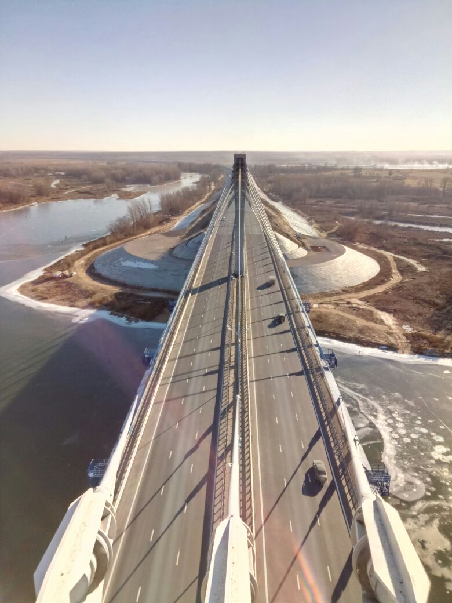

Из всего, что воздвигает и строит человек, повинуясь жизненному инстинкту, на мой взгляд,
нет ничего лучше и ценнее мостов. Они важнее, чем дома, священнее, чем храмы, – ибо они общие.
Они принадлежат всем и каждому, одинаково относятся ко всем, полезные, воздвигнутые всегда осмысленно,
там, где в них возникает наибольшая нужда, они более долговечны, чем прочие сооружения, и не служат
ничему тайному и злому.